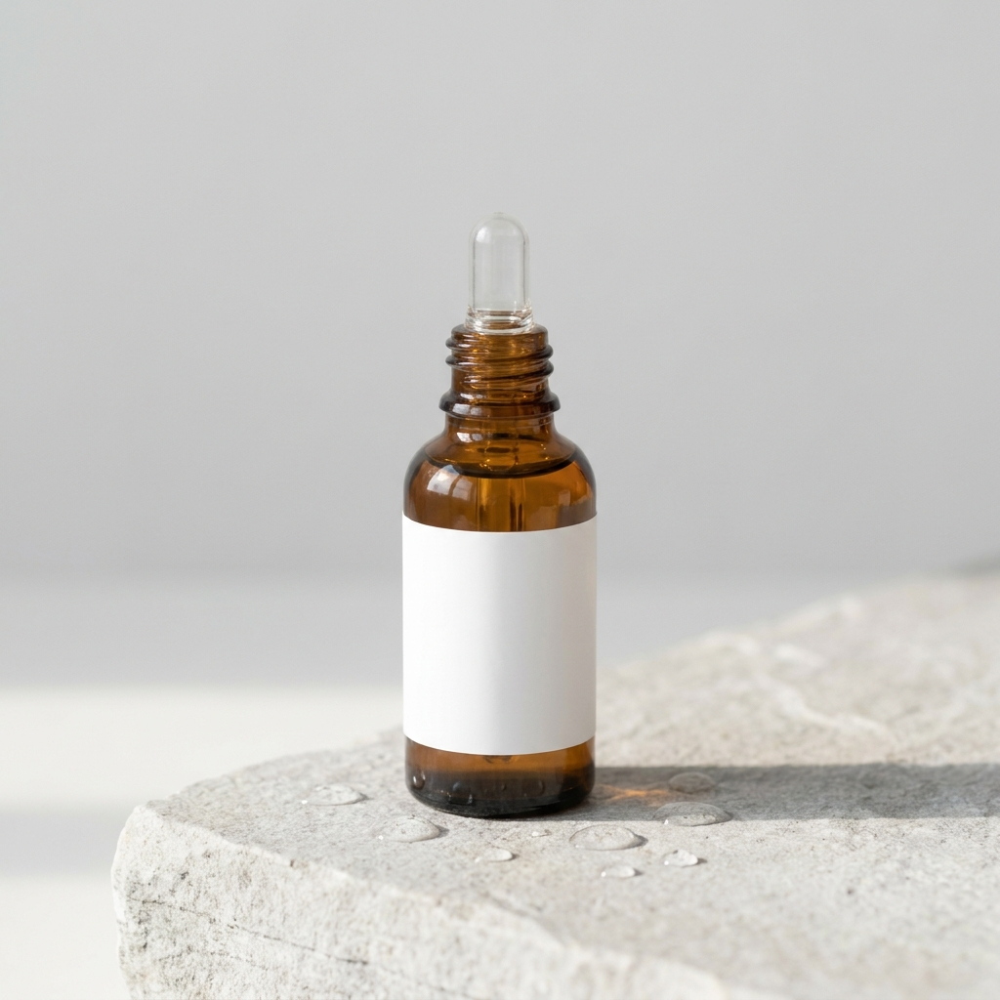

<div style="max-width:750px;margin:0 auto;background:#FFFFFF;color:#1B2420;font-family:'Hiragino Kaku Gothic ProN','Yu Gothic',sans-serif;font-size:15px;line-height:1.7;">
<div style="padding:34px 26px;border-bottom:1px solid #E4EBE7;"><div style="font-size:11px;letter-spacing:2px;color:#0E6B57;text-transform:uppercase;margin:0 0 10px 0;">DERMA SERUM</div><div style="font-size:22px;font-weight:800;line-height:1.35;margin:0 0 8px 0;">うるおいで、キメの整った肌へ</div><div style="color:#5F6A64;font-size:13.5px;">ナイアシンアミド配合の集中ケア美容液。乾燥が気になる肌に、角質層までうるおいを届けます。</div><div style="margin-top:18px;"></div></div>
<div style="padding:34px 26px;border-bottom:1px solid #E4EBE7;"><div style="font-size:22px;font-weight:800;line-height:1.35;margin:0 0 8px 0;">こんなお悩み、ありませんか？</div><div style="margin-top:14px;"><div style="background:#F5F9F7;border-radius:8px;padding:10px 13px;margin:0 0 9px 0;font-size:14.5px;"><span style="color:#0E6B57;font-weight:800;margin-right:8px;">&#10003;</span>乾燥でメイクのりが悪い</div><div style="background:#F5F9F7;border-radius:8px;padding:10px 13px;margin:0 0 9px 0;font-size:14.5px;"><span style="color:#0E6B57;font-weight:800;margin-right:8px;">&#10003;</span>キメの乱れが気になる</div><div style="background:#F5F9F7;border-radius:8px;padding:10px 13px;margin:0 0 9px 0;font-size:14.5px;"><span style="color:#0E6B57;font-weight:800;margin-right:8px;">&#10003;</span>ベタつくスキンケアは苦手</div></div></div>
<div style="padding:34px 26px;border-bottom:1px solid #E4EBE7;"><div style="font-size:11px;letter-spacing:2px;color:#0E6B57;text-transform:uppercase;margin:0 0 10px 0;">KEY INGREDIENT</div><div style="font-size:22px;font-weight:800;line-height:1.35;margin:0 0 8px 0;">ナイアシンアミドとは</div><div style="color:#5F6A64;font-size:13.5px;">水溶性ビタミンB群の一種で、スキンケア製品に広く配合される保湿成分です。毎日のお手入れで、うるおいのある整った肌印象へ導きます。</div></div>
<div style="padding:34px 26px;border-bottom:1px solid #E4EBE7;"><div style="font-size:22px;font-weight:800;line-height:1.35;margin:0 0 8px 0;">このセラムの特長</div><div style="margin-top:16px;"><div style="border:1px solid #E4EBE7;border-radius:10px;padding:15px 16px;margin:0 0 14px 0;"><div style="font-size:10.5px;color:#0E6B57;letter-spacing:1.5px;">POINT 01</div><div style="font-size:16px;font-weight:700;margin:3px 0 6px 0;">角質層までうるおい</div><div style="font-size:13.5px;color:#5F6A64;">うるおい成分ナイアシンアミド・パンテノール・ヒアルロン酸Na配合</div></div><div style="border:1px solid #E4EBE7;border-radius:10px;padding:15px 16px;margin:0 0 14px 0;"><div style="font-size:10.5px;color:#0E6B57;letter-spacing:1.5px;">POINT 02</div><div style="font-size:16px;font-weight:700;margin:3px 0 6px 0;">さらっとした使用感</div><div style="font-size:13.5px;color:#5F6A64;">ベタつかず、朝のメイク前にも使いやすいテクスチャー</div></div><div style="border:1px solid #E4EBE7;border-radius:10px;padding:15px 16px;margin:0 0 14px 0;"><div style="font-size:10.5px;color:#0E6B57;letter-spacing:1.5px;">POINT 03</div><div style="font-size:16px;font-weight:700;margin:3px 0 6px 0;">シンプル処方</div><div style="font-size:13.5px;color:#5F6A64;">無香料・無着色</div></div></div></div>
<div style="padding:34px 26px;border-bottom:1px solid #E4EBE7;"><div style="font-size:22px;font-weight:800;line-height:1.35;margin:0 0 8px 0;">使い方</div><table style="width:100%;border-collapse:collapse;margin-top:14px;"><tr><td style="border:1px solid #E4EBE7;padding:9px 11px;background:#F5F9F7;font-size:12px;white-space:nowrap;">STEP 1</td><td style="border:1px solid #E4EBE7;padding:9px 11px;font-size:13.5px;">洗顔後、化粧水で肌を整えます</td></tr><tr><td style="border:1px solid #E4EBE7;padding:9px 11px;background:#F5F9F7;font-size:12px;white-space:nowrap;">STEP 2</td><td style="border:1px solid #E4EBE7;padding:9px 11px;font-size:13.5px;">適量(2〜3滴)を顔全体にやさしくなじませます</td></tr><tr><td style="border:1px solid #E4EBE7;padding:9px 11px;background:#F5F9F7;font-size:12px;white-space:nowrap;">STEP 3</td><td style="border:1px solid #E4EBE7;padding:9px 11px;font-size:13.5px;">朝の使用時は日焼け止めのご使用をおすすめします</td></tr></table><div style="margin-top:16px;"></div></div>
<div style="padding:34px 26px;border-bottom:1px solid #E4EBE7;"><div style="font-size:22px;font-weight:800;line-height:1.35;margin:0 0 8px 0;">全成分</div><div style="margin-top:12px;font-size:12px;color:#5F6A64;background:#F5F9F7;border-radius:8px;padding:12px 14px;">水, BG, グリセリン, ナイアシンアミド, パンテノール, ヒアルロン酸Na, カルボマー, アルギニン, エチルヘキシルグリセリン, フェノキシエタノール</div></div>
<div style="padding:34px 26px;border-bottom:1px solid #E4EBE7;"><div style="font-size:22px;font-weight:800;line-height:1.35;margin:0 0 8px 0;">よくあるご質問</div><div style="border:1px solid #E4EBE7;border-radius:9px;padding:11px 14px;margin-top:10px;"><div style="font-weight:700;font-size:14px;">Q. 敏感肌でも使えますか？</div><div style="margin-top:8px;font-size:13.5px;color:#5F6A64;">A. ご使用前にパッチテストをおすすめします。肌に異常を感じた場合はご使用をおやめください。</div></div><div style="border:1px solid #E4EBE7;border-radius:9px;padding:11px 14px;margin-top:10px;"><div style="font-weight:700;font-size:14px;">Q. いつ使えばいいですか？</div><div style="margin-top:8px;font-size:13.5px;color:#5F6A64;">A. 朝晩のスキンケアで、化粧水の後にお使いいただけます。継続してのご使用をおすすめします。</div></div></div>
<div style="padding:34px 26px;"><div style="font-size:16px;font-weight:800;line-height:1.35;margin:0 0 8px 0;">配送・返品について</div><div style="font-size:12.5px;color:#5F6A64;">{{STORE_POLICY_SLOT}}</div></div>
</div>